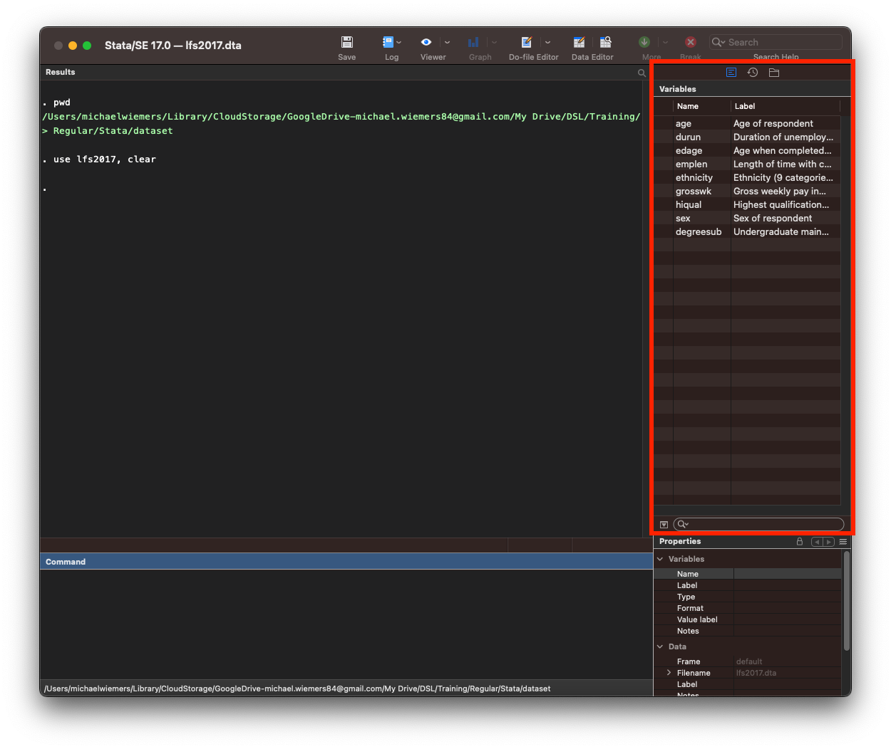
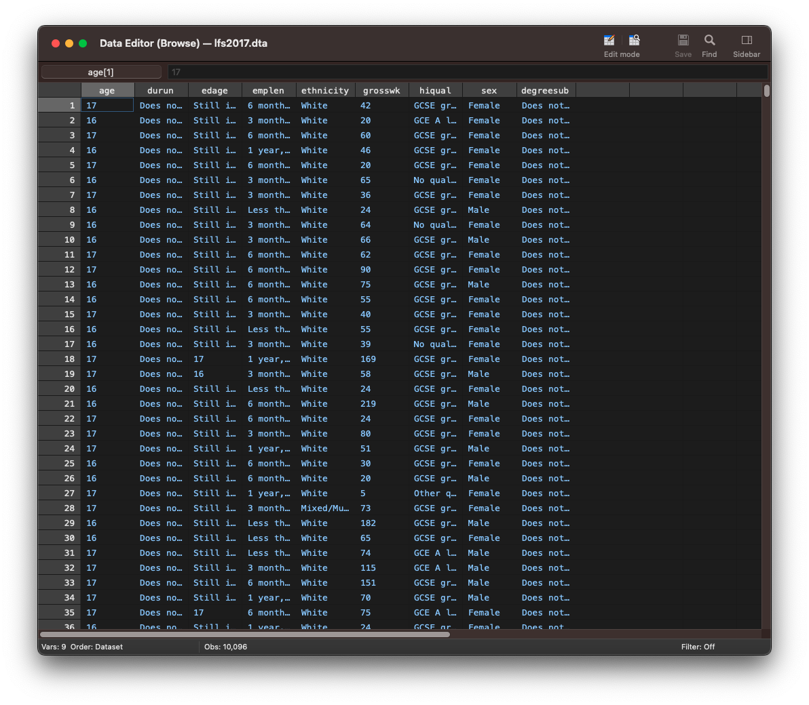
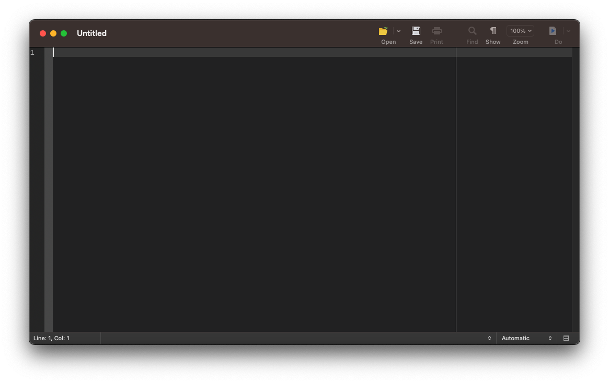

Stata Fundamentals 1: Importing, inspecting and summarizing data
What is Stata?
Stata is a general purpose statistical analysis software, similar to SPSS. You can use it to preprocess, analyse and visualise data.
It is mostly used in research and particularly in the fields of economics, political science, and the social sciences in general.
In Stata you can either use the menus from the graphical user interface or write commands yourself. Most Stata users write commands and do not use the user interface. There are many advantages to learning commands. A script can be shared, edited by colleagues and collaborators and made available with publications. By using scripts for your research, you promote transparency and reproducibility. Since writing commands has many advantages and the majority of Stata users write scripts, we will also teach you how to write commands in this workshop series.
More information on how the session is run
How to work together in the Zoom sessions:- Plesase turn on your microphone and webcam.
- One shares the screen and the other requests remote control.
- Take turns on who types for each exercise.
- Ask the trainer if you struggle to find a solution.
- Use the help command. To get help with a specific command type help "command name"
- Search online. The statalist.org forum is usually the most useful resource.
- change the working directory
- import stata and csv documents
- print an overview of the variables in a dataset
- print a dataset and subsets of the data
- create a summary of continuous variables
Access to Datasets
Please use this link to get access to the datasets that you will be using in the exercises
Changing the working directory
When loading a dataset, Stata will always look for the file in the working directory, unless you specify the whole path to the file.
Although you can always specify the whole path to open a file that is not located in the working directory, it makes sense, to change the working directory to where your datasets are located at the beginning of your analysis. This will make it easier to load and switch between different datasets, since you only have to specify the file name and not the whole path to load a dataset.
Printing the current working directory
The working directory is displayed on the bottom of the main Stata window, just below the Command field.
You can also use the pwd command to print the working directory.
. pwd
/Users/michaelwiemers
Changing the working directory
You can change the working directory by using the cd command as below. Notice that the path has to be put in quotations.
. cd "/Users/michaelwiemers/OneDrive - London School of Economics/DSL/datasets/"
/Users/michaelwiemers/OneDrive - London School of Economics/DSL/datasets
Stata will return an error, as in the example below, when the folder does not exist on the computer.
. cd "/Users/mickey_mouse"
unable to change to /Users/mickey_mouse
r(170);
Exercise: Changing the working directory
- Print the current working directory.
- Change the working directory to where the datasets lfs2017.dta, gapminder.csv and MCS_testscores.dta are located on your computer.
- Print the working directory again to verify that it has been changed.
Loading data into Stata
In this section you will learn how to import Stata datasets (.dta) and flat files, i.e. comma or tab separated value files (.csv or .tsv).
loading a .dta file (Stata dataset)
Now that Stata knows where your datasets are located, we can load a dataset without having to specify the whole path. We can simply refer to the file name.
We are going to load the lfs2017.dta file. This dataset contains data from the labour force survey from 2017. This dataset contains data on a persons age, sex, income, highest qualification and more.
We can load a .dta file, with the use command.
. use lfs2017
You can see that the variables pane on the right now lists all variables in the lfs2017 dataset.
Loading a public dataset from stata-press.com
There are a number of datasets in stata format available from the stata-press.com website. You can use this link for a list of all available datasets (unfortunately, without description):
https://www.stata-press.com/data/r15/u.html
To load the auto dataset from the stata website, we use the webuse command followed by the name of the dataset.
. webuse auto
(1978 Automobile Data)
Loading a csv file
We can use the import delimited command to import a csv file. In the example below we are importing the data stored in the gapminder.csv file, which is from the gapminder.org website, and lists unemployment, life expectancy and gdp per capita, for a sample of countries from across the world.
As you can see below, this commad returns an error. This is because we already have a dataset loaded in Stata and the error warns us that by loading the new dataset, unsaved changes to the currently loaded dataset might be lost.
. import delimited "gapminder.csv"
no; data in memory would be lost
r(4);
We have to first remove the currently loaded dataset with the clear command.
. clear
. import delimited "gapminder.csv"
(15 vars, 427 obs)
Alternatively, we can add clear as an option to the import delimited command or any other command to import data.
. import delimited "gapminder.csv", clear
(15 vars, 427 obs)
Exercise: Loading data
- Load the lfs2017 dataset using the use command.
- Load the citytemp.dta dataset from the Stata website.
- Load the csv file gapminder.csv.
- Notice how you can see the variables in the variables pane change everytime you load a different dataset.
Inspecting a dataset
In this section, we will focus on a few commands to inspect a dataset.
We’re first going to re-open the lfs2017 dataset.
. use lfs2017, clear
Summary of a dataset
The describe command produces a summary of a dataset. It lists the total number of observations, variables and the size of the dataset. Apart from the variable name and the variable label, which are also displayed in the Variables pane in the top right in the main Stata window, it also lists the storage type, display format and the value label.
The storage type refers to how the values of a variable are stored in memory. Different storage types can hold different types of information, i.e. numerical or text, and can store information of different size.
The display format refers to how the information is displayed, that is, the number of digits and decimals and the alignment.
The value label refers to the text labels that are being associated to the numerical values in the dataset. The sex variable has the numerical values 1 and 2, but when looking at the data you will see the labels ‘Female’ and ‘Male’ displayed. This is because the values 1 and 2 have received the corresponding labels ‘Male’ and ‘Female’.
describe
Contains data from lfs2017.dta
obs: 10,096
vars: 9 3 Aug 2020 17:50
size: 100,960
------------------------------------------------------------------------------------------------------------------------
storage display value
variable name type format label variable label
------------------------------------------------------------------------------------------------------------------------
age byte %8.0g AGE Age of respondent
durun byte %8.0g DURUN Duration of unemployment
edage byte %8.0g EDAGE Age when completed full time education
emplen byte %8.0g EMPLEN Length of time with current employer
ethnicity byte %8.0g ETHUKEUL Ethnicity (9 categories) UK level
grosswk int %8.0g GRSSWK Gross weekly pay in main job (Government scheme or employee)
hiqual byte %8.0g HIQUL15D Highest qualification (detailed grouping)
sex byte %8.0g SEX Sex of respondent
degreesub byte %8.0g UNCOMBMA Undergraduate main subject area
------------------------------------------------------------------------------------------------------------------------
Sorted by:
Printing the data
With the list command, you can print the dataset in the results pane. Depending on the width of your Stata window, a single row might be spread out across several lines in the results pane.
list
+------------------------------------------------------------------------------------------+
| age durun edage emplen ethnic~y grosswk hiqual sex degree~b |
|------------------------------------------------------------------------------------------|
10086. | 55 Does not 17 10 years White 451 GCSE gra Female Does not |
10087. | 66 Does not 15 10 years White 279 Higher e Male Does not |
10088. | 64 Does not 15 20 years White 337 GCSE gra Female Does not |
10089. | 74 Does not 17 20 years White 75 Other qu Female Does not |
10090. | 58 Does not 16 5 years, White 525 No quali Male Does not |
|------------------------------------------------------------------------------------------|
10091. | 59 Does not 17 20 years White 808 GCSE gra Male Does not |
10092. | 63 Does not 19 6 months White 423 Higher e Female Does not |
10093. | 60 Does not Never ha 10 years Black/Af 208 Other qu Female Does not |
10094. | 59 Does not 16 2 years, White 463 GCSE gra Male Does not |
10095. | 70 Does not 15 20 years White 138 GCSE gra Female Does not |
|------------------------------------------------------------------------------------------|
10096. | 57 Does not 17 20 years White 279 GCSE gra Male Does not |
+------------------------------------------------------------------------------------------+
Printing single observations or a range of observations
To display only a specific observation, type list in followed by the observation to be displayed. For instance, to display the 10th observation use this command:
list in 10
+----------------------------------------------------------------------------------------+
| age durun edage emplen ethnic~y grosswk hiqual sex degree~b |
|----------------------------------------------------------------------------------------|
10. | 16 Does not Still in 3 months White 66 GCSE gra Male Does not |
+----------------------------------------------------------------------------------------+
To display a range of observations, type list in followed by the first observation, a forward slash and the last observation. For instance, to display observations 1 to 20 use this command:
list in 1/20
+------------------------------------------------------------------------------------------+
| age durun edage emplen ethnic~y grosswk hiqual sex degree~b |
|------------------------------------------------------------------------------------------|
1. | 17 Does not Still in 6 months White 42 GCSE gra Female Does not |
2. | 16 Does not Still in 3 months White 20 GCE A le Female Does not |
3. | 17 Does not Still in 6 months White 60 GCSE gra Female Does not |
4. | 16 Does not Still in 1 year, White 46 GCSE gra Female Does not |
5. | 17 Does not Still in 6 months White 20 GCSE gra Female Does not |
|------------------------------------------------------------------------------------------|
6. | 16 Does not Still in 3 months White 65 No quali Female Does not |
7. | 17 Does not Still in 3 months White 36 GCSE gra Female Does not |
8. | 16 Does not Still in Less tha White 24 GCSE gra Male Does not |
9. | 16 Does not Still in 3 months White 64 No quali Female Does not |
10. | 16 Does not Still in 3 months White 66 GCSE gra Male Does not |
|------------------------------------------------------------------------------------------|
11. | 17 Does not Still in 6 months White 62 GCSE gra Female Does not |
12. | 17 Does not Still in 6 months White 90 GCSE gra Female Does not |
13. | 16 Does not Still in 6 months White 75 GCSE gra Male Does not |
14. | 16 Does not Still in 6 months White 55 GCSE gra Female Does not |
15. | 17 Does not Still in 3 months White 40 GCSE gra Female Does not |
|------------------------------------------------------------------------------------------|
16. | 16 Does not Still in Less tha White 55 GCSE gra Female Does not |
17. | 16 Does not Still in 3 months White 39 No quali Female Does not |
18. | 17 Does not 17 1 year, White 169 GCSE gra Female Does not |
19. | 17 Does not 16 3 months White 58 GCSE gra Male Does not |
20. | 16 Does not Still in Less tha White 24 GCSE gra Female Does not |
+------------------------------------------------------------------------------------------+
Printing only a subset of variables
To only display the observations for a specific variable, type list followed by the variable name. Here, we are only printing the values for the age variable.
list age
+-----+
| age |
|-----|
10086. | 55 |
10087. | 66 |
10088. | 64 |
10089. | 74 |
10090. | 58 |
|-----|
10091. | 59 |
10092. | 63 |
10093. | 60 |
10094. | 59 |
10095. | 70 |
|-----|
10096. | 57 |
+-----+
To display a subset of variables, type list followed by the different variable names separated with a space.
list age grosswk sex
+------------------------+
| age grosswk sex |
|------------------------|
10086. | 55 451 Female |
10087. | 66 279 Male |
10088. | 64 337 Female |
10089. | 74 75 Female |
10090. | 58 525 Male |
|------------------------|
10091. | 59 808 Male |
10092. | 63 423 Female |
10093. | 60 208 Female |
10094. | 59 463 Male |
10095. | 70 138 Female |
|------------------------|
10096. | 57 279 Male |
+------------------------+
To display a range of variables type list followed by the first variable, a hyphen and the last variable. The command list grosswk - degreesub will print the observations for the variables starting from ethnicity till sex in the order as appearing in the dataset from left to right.
list grosswk - degreesub
+----------------------------------------+
| grosswk hiqual sex degree~b |
|----------------------------------------|
10086. | 451 GCSE gra Female Does not |
10087. | 279 Higher e Male Does not |
10088. | 337 GCSE gra Female Does not |
10089. | 75 Other qu Female Does not |
10090. | 525 No quali Male Does not |
|----------------------------------------|
10091. | 808 GCSE gra Male Does not |
10092. | 423 Higher e Female Does not |
10093. | 208 Other qu Female Does not |
10094. | 463 GCSE gra Male Does not |
10095. | 138 GCSE gra Female Does not |
|----------------------------------------|
10096. | 279 GCSE gra Male Does not |
+----------------------------------------+
Printing only a subset of variables for specific observations
You can also display a range of observations for a subset of variables. Type list followed by the variable names and then specify which observations should be displayed, with in start/end. For instance, to display the first 10 observations for the variables age, sex and grosswk use this command:
list age sex grosswk in 1/10
+------------------------+
| age sex grosswk |
|------------------------|
1. | 17 Female 42 |
2. | 16 Female 20 |
3. | 17 Female 60 |
4. | 16 Female 46 |
5. | 17 Female 20 |
|------------------------|
6. | 16 Female 65 |
7. | 17 Female 36 |
8. | 16 Male 24 |
9. | 16 Female 64 |
10. | 16 Male 66 |
+------------------------+
You can do the same with a range of variables.
list grosswk-sex in 1/10
+-----------------------------+
| grosswk hiqual sex |
|-----------------------------|
1. | 42 GCSE gra Female |
2. | 20 GCE A le Female |
3. | 60 GCSE gra Female |
4. | 46 GCSE gra Female |
5. | 20 GCSE gra Female |
|-----------------------------|
6. | 65 No quali Female |
7. | 36 GCSE gra Female |
8. | 24 GCSE gra Male |
9. | 64 No quali Female |
10. | 66 GCSE gra Male |
+-----------------------------+
Viewing the dataset in the data-editor window
The browse command is very similar to the list command, in the sense that it will list the observations in your dataset. In contrast to list, the output will be displayed in a new window, called the data-editor, and not in the results pane.
browse

Just as with the list command, you can chose to only display a subset of variables or a range of observations. For instance, to only display the first 10 observations for the variables from grosswk to sex, type the command as below.
browse grosswk-sex in 1/10
Exercise: Inspecting data
- Open the census5 dataset from the stata website, which has data from the 1980 US census
- Print an overview of the variables.
- Print the first 10 observations.
- Print only the marriage and divorce variables.
- Print only the first 10 observations for the marriage and divorce variables.
Summary statistics
The summarize command gives you a number of descriptive statistics like the mean, standard deviation and the minimum and maximum value. We can abbreviate the summarize command as sum.
sum grosswk
Variable | Obs Mean Std. Dev. Min Max
-------------+---------------------------------------------------------
grosswk | 10,096 521.7672 522.8757 5 23076
You can add the detail option to the command to also display the percentiles, variance, skewness and kurtosis.
sum grosswk, detail
Gross weekly pay in main job (Government scheme or
employee)
-------------------------------------------------------------
Percentiles Smallest
1% 34 5
5% 90 5
10% 135 5 Obs 10,096
25% 250 5 Sum of Wgt. 10,096
50% 418 Mean 521.7672
Largest Std. Dev. 522.8757
75% 664 10250
90% 962 13846 Variance 273399
95% 1269 13846 Skewness 13.48147
99% 1923 23076 Kurtosis 448.2789
To summarize more than one continuous variable, add all variable names after sum.
sum grosswk sex
Variable | Obs Mean Std. Dev. Min Max
-------------+---------------------------------------------------------
grosswk | 10,096 521.7672 522.8757 5 23076
sex | 10,096 1.520503 .4996042 1 2
Customized summary statistics
The summarize command although useful to get a quick impression of a variable, doesn’t feature any options to select specific descriptives to be displayed in the output. The tabstat command allows such customisation of the statistics to be displayed.
tabstat age
variable | mean
-------------+----------
age | 42.37223
------------------------
The command as such only displays the mean of a variable. You can specify each descriptive statistic you want to be included in the output with the stat option. Below we use the stat option to display the mean, the standard deviation, the minimum, percentiles and the maximum.
tabstat age, stat(mean, sd, min, p10, p25, p50, p75, p90, max)
variable | mean sd min p10 p25 p50 p75 p90 max
-------------+------------------------------------------------------------------------------------------
age | 42.37223 12.81225 16 25 32 43 52 59 78
--------------------------------------------------------------------------------------------------------
Here is a list of all the statistics that can be added with the stat() option.
statname Definition
---------------------------------------------------------------------
mean mean
count count of nonmissing observations
n same as count
sum sum
max maximum
min minimum
range range = max - min
sd standard deviation
variance variance
cv coefficient of variation (sd/mean)
semean standard error of mean (sd/sqrt(n))
skewness skewness
kurtosis kurtosis
p1 1st percentile
p5 5th percentile
p10 10th percentile
p25 25th percentile
median median (same as p50)
p50 50th percentile (same as median)
p75 75th percentile
p90 90th percentile
p95 95th percentile
p99 99th percentile
iqr interquartile range = p75 - p25
q equivalent to specifying p25 p50 p75
Both summarize and tabstat can be used to create descriptive statistics for a selection of variables. You can use a hyphen between two variable names to select a range of variables or select non-adjacent variables with a space inbetween their names.
sum age edage grosswk
Variable | Obs Mean Std. Dev. Min Max
-------------+---------------------------------------------------------
age | 10,096 42.37223 12.81225 16 78
edage | 10,096 20.64352 12.94552 -8 97
grosswk | 10,096 521.7672 522.8757 5 23076
When using multiple variables with the tabstat command, Stata per default lists the statistics in the rows of the table. To force the statistics to the columns, use the col(stat) option.
tabstat age edage grosswk, stat(mean, sd, min, p10, p25, p50, p75, p90, max) col(stat)
variable | mean sd min p10 p25 p50 p75 p90 max
-------------+------------------------------------------------------------------------------------------
age | 42.37223 12.81225 16 25 32 43 52 59 78
edage | 20.64352 12.94552 -8 16 16 18 21 23 97
grosswk | 521.7672 522.8757 5 135 250 418 664 962 23076
--------------------------------------------------------------------------------------------------------
Exercise: Summary statistics
The MCS_testscore dataset contains data from the age 5 sweep from the Millenium Cohort Study, which examined the first year of primary schooling alongside childhood health, childcare, education, social and family circumstances.
- Open the MCS_testscore dataset.
- Use summarize to create a table with descriptive statistics for the variables pse to fsptotal.
- Use the tabstat command to create a table for the same variables that lists the mean, standard deviation, standard error of the mean, min, max and the 25th and 75th percentile.
- Make sure that the statistics are displayed in the columns.
Stata Fundamentals 2: Do-files and computing variables
More information on how the session is run
How to work together:- Plesase turn on your microphone and webcam.
- One shares the screen and the other requests remote control.
- Take turns on who types for each exercise.
- Ask the trainer if you struggle to find a solution.
- Use the help command. To get help with a specific command type help "command name"
- Search online. The statalist.org forum is usually the most useful resource.
- use do-files to create analysis scripts
- create frequency tables
- compute new variables
- save datasets
Access to Datasets
Please use this link to get access to the datasets that you will be using in the exercises
Do files
With do-files you can keep a record of your commands in a text file, which makes it easy to re-run commands for pre-processing, plotting and analysing your data. It also provides a means to keep a record of your analysis and to share it with colleagues or to attach it to your dissertation or make it available with your publications.
Just take the first section in which you changed the working directory and loaded a file into Stata as an example. By using a do-file you won’t have to re-type these commands in order to load the dataset the next time you want to work on your analysis.
Create a new do file
To create a new do-file use the shortcut Ctrl+9 (Windows) or Cmd+9 (Mac). A new do-file editor with an empty do-file script will open. To create additional do-files use the Ctrl+N (Windows) or Cmd+N (Mac) shortcut.
Adding comments
Comments, which are always in green, will be ignored by Stata. That means, Stata will not try to execute it as a command. You can use comments to explain what your script does.
In the example do-file below, we use three differnt types of comments:
- double forward slash //
- asterisk *
- forward slash-asterisk combination /**/
In line 1 the double forward slash is being used to turn the first line into a comment. The // can be used for the title of the do-file or a section title within your do-file.
The other character that can be used to create comments is the asterisk. In line 3-5, the astrisk is used to comment out each line of that three-line paragraph about the dataset.
The forward slash-asterisk combination /**/ can be used within a line to add a comment after a command (see line 7).

Running a do-file
You can use the Ctrl+D (Windows) Cmd+D (Mac) command to run the whole file. To only run a single line or a selection of lines, highlight the lines and then use the Ctrl+D (Windows) or Cmd+D (Mac) shortcut.
Exercise: Do-files
- Create a new do-file to reproduce the commands from the previous session on Inspecting a dataset. See the commands below.
- Add a comment in the first line to describe what your do-file does.
- Copy the commands from the previous exercise into your do-file.
- Run the whole do-file.
- Run only the first three commands.
clear all
webuse census5
describe
list in 1/10
list marriage_rate divorce_rate
list marriage_rate divorce_rate in 1/10
Creating frequency tables
Creating one- and two-way frequency tables
With the tabulate command, you can create one- and two-way frequency tables. We’re going to start with a simple frequency table for the hiqual variable. The tabulate command can be abbreviated as tab. In this example, we are again working with the lfs2017 dataset.
. use lfs2017, clear
. tab hiqual
Highest qualification |
(detailed grouping) | Freq. Percent Cum.
-------------------------------+-----------------------------------
No answer | 11 0.11 0.11
Degree or equivalent | 3,446 34.13 34.24
Higher education | 982 9.73 43.97
GCE A level or equivalent | 2,312 22.90 66.87
GCSE grades A*-C or equivalent | 2,037 20.18 87.04
Other qualification | 728 7.21 94.26
No qualification | 503 4.98 99.24
Don't know | 77 0.76 100.00
-------------------------------+-----------------------------------
Total | 10,096 100.00
You can also create a two-way frequency table with the tabulate command. In the example below we look at the relationship between the sex and hiqual variables. The first variable sex will go to the rows. The second variable hiqual will go to the columns.
. tab sex hiqual
Sex of | Highest qualification (detailed grouping)
respondent | No answer Degree or Higher ed GCE A lev GCSE grad Other qua No qualif Don't kno | Total
---------------+----------------------------------------------------------------------------------------+----------
Male | 6 1,590 434 1,234 870 403 258 46 | 4,841
Female | 5 1,856 548 1,078 1,167 325 245 31 | 5,255
---------------+----------------------------------------------------------------------------------------+----------
Total | 11 3,446 982 2,312 2,037 728 503 77 | 10,096
To display percentages instead of frequencies, we can add the row and col options. The row option will add the row percentages, while col will add the column percentages. Per cell, the values from top to bottom reflect the frequency, row percentage and column percentage.
For instance, in the first cell (Male, No answer) there are 6 observations. 0.12 % of male respondents answered with “No answer” and 54.55% of those that didn’t provide an answer were male.
. tab sex hiqual, row col
+-------------------+
| Key |
|-------------------|
| frequency |
| row percentage |
| column percentage |
+-------------------+
Sex of | Highest qualification (detailed grouping)
respondent | No answer Degree or Higher ed GCE A lev GCSE grad Other qua No qualif Don't kno | Total
---------------+----------------------------------------------------------------------------------------+----------
Male | 6 1,590 434 1,234 870 403 258 46 | 4,841
| 0.12 32.84 8.97 25.49 17.97 8.32 5.33 0.95 | 100.00
| 54.55 46.14 44.20 53.37 42.71 55.36 51.29 59.74 | 47.95
---------------+----------------------------------------------------------------------------------------+----------
Female | 5 1,856 548 1,078 1,167 325 245 31 | 5,255
| 0.10 35.32 10.43 20.51 22.21 6.18 4.66 0.59 | 100.00
| 45.45 53.86 55.80 46.63 57.29 44.64 48.71 40.26 | 52.05
---------------+----------------------------------------------------------------------------------------+----------
Total | 11 3,446 982 2,312 2,037 728 503 77 | 10,096
| 0.11 34.13 9.73 22.90 20.18 7.21 4.98 0.76 | 100.00
| 100.00 100.00 100.00 100.00 100.00 100.00 100.00 100.00 | 100.00
Exercise: Creating frequency tables
There is growing evidence that breastfeeding improves cognitive development of infants. The MCS_testscore dataset contains data on the Foundation Stage Profile scores, which is a teacher assessment of children’s development at the end of reception year, and amongst many other data also data on the months a child has been breastfed. We can use a frequency table to explore whether we can find evidence for a relationship between the length of breastfeeding and the foundation stage profile scores on the descriptive level in this dataset.
- Open the MCS_testscore dataset, which is in the files folder.
- The variables we are interested in are fsp (quartiles for the foundation stage profile score) and mbreastt (lenght of breastfeeding in months). Create a two-way frequency table that lists the months of breastfeeding in the rows and the fsp score quartiles in the columns. Also include percentages for the rows.
- Is the data in line with the notion that breastfeeding improves cognitive development?
Computing variables
Computing a new variable
With the generate command we can compute new variables in our dataset. For instance, we can calculate a new variable for the annual income based on the weekly income which is listed in the grosswk variable.
We can abbreviate the generate command with gen. After gen we specify the name of the new variable for the yearly income as grossyr. After the = sign, we write an expression to calculate the values of the new variable. We multiply the values from the grosswk variable, the weekly income, by 52 to calculate the approximate annual income and assign the calculated values to a new variable called grossyr.
. use lfs2017, clear
. gen grossyr = grosswk*52
We can now use the summarize command to compare the mean and standard deviation of the grosswk and grossyr variables.
. sum grossyr grosswk
Variable | Obs Mean Std. Dev. Min Max
-------------+---------------------------------------------------------
grossyr | 10,096 27131.9 27189.54 260 1199952
grosswk | 10,096 521.7672 522.8757 5 23076
Replacing a variable
The replace command enables you to overwrite an existing variable in your dataset. As an illustration, let us replace the values of the newly created grossyr variable, using the same expression we used to create the grossyr variable.
. replace grossyr = grosswk*52
(0 real changes made)
Since we used the same formula, the values in grossyr haven’t effectively changed.
. sum grossyr grosswk
Variable | Obs Mean Std. Dev. Min Max
-------------+---------------------------------------------------------
grossyr | 10,096 27131.9 27189.54 260 1199952
grosswk | 10,096 521.7672 522.8757 5 23076
Exercise: Computing variables
The auto dataset lists the turn circle, which is the radius of the smallest circular turn a car can make. To determine in how far the turn circle depends on a car’s length, we want to calculate the ratio of the turn circle and the length.
- Open the auto dataset using the **webuse** command
- Convert the length variable, which lists the length of a car in inches, to feet (12 inch = 1 ft). Overwrite the length variable.
- Calculate a new variable TLrat as the ratio of the turn circle and the length in feet.
- Print the mean and standard deviation of the new variable.
Saving data
Saving as new file and replacing files
We have now added a new variable to our dataset, the grossyr variable. With the save command we can save changes we made to our dataset. If you want to save the dataset under a new name, you have to specify the new file name following save.
use lfs2017, clear
save lfs2017b
Alternatively, if you wanted to overwrite the existing file, you can use save with the replace option.
save, replace
To replace an existing file, you have to specify the file to be replaced and also add the replace option. For instance, assuming I am currently working on the lfs2017_raw file, I made some changes to my dataset and now, I want to overwrite it under the already existing file lfs2017, I would have to use the command as below.
save lfs2017, replace
Exercise: Saving data
- Save the lfs2017 dataset under the new name lfs2017_raw.
- The grosswk variable lists the weekly income in Pound Sterling. Create a new variable for the weekly income in USD. The conversion is 1 GBP = 1.24 USD.
- Save the dataset with the newly calculated variable under lfs2017.
Final task: Please give us your feedback!
Upon completing the survey, you will receive the link to the solution file, to check how your commands compares to the sample solution.
In order to adapt our training to your needs and provide the most valuable learning experience for you, we depend on your feedack.
We would be grateful if you could take 1 min before the end of the workshop to get your feedback!
Click here to open the survey!